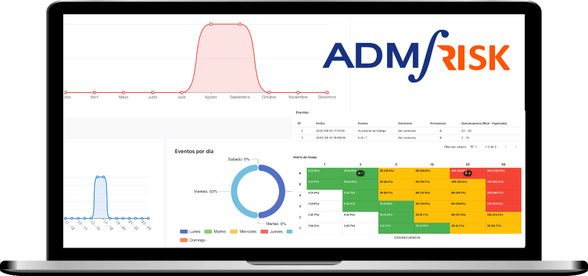

Matrices 100% Configurables
Adapte escalas de aceptabilidad, frecuencia y consecuencia (4×4, 5×5, 6×5 o asimétricas) sin forzar sus procesos a plantillas rígidas.
Soluciones corporativas para el Comercio, Cadenas de Abastecimiento, Retail y Centros Comerciales (Malls)
Protegemos personas, activos y reputación corporativa mediante estrategias preventivas de alto impacto que optimizan sus procesos y entregan un balance financiero positivo frente a pérdidas y riesgos.
El socio estratégico que transforma la prevención de riesgos en rentabilidad empresarial
Riskcom es una solución alterna a los servicios de vigilancia y seguridad privada que busca cubrir mayores tareas en la gestión de los riesgos del comercio. Proporcionamos a las organizaciones del comercio las mejores soluciones y estrategias de gestión de riesgos, crisis y continuidad para resguardar sus operaciones comerciales, enfocados en la integridad de personas, activos, reputación y gestión de pérdidas.
Estas prácticas buscan optimizar sus procesos entregando un balance financiero vs. pérdidas y riesgos.
Conceptos jurídicos de órganos de control del gobierno colombiano indican que nuestras actividades no están enmarcadas en servicios de vigilancia y seguridad privada, lo que nos permite desarrollar más actividades en pro del cliente con costos más bajos a los del mercado regulado por la Superintendencia de Vigilancia y Seguridad Privada.
Queremos ser reconocidos por los negocios de comercio como el mejor asociado de negocios, generando valor en la prevención y la gestión de los riesgos, las crisis y la continuidad, aportando a la rentabilidad y la continuidad del negocio.
Riskcom no ofrece servicios de poligrafías, tecnología en seguridad, supervisión de vigilancia y seguridad privada, investigaciones, visitas domiciliarias, estudios de seguridad física, seguimientos de personal, servicios de vigilancia y seguridad privada en cualquier modalidad, ni acciones legales de judicialización.
Obramos bajo estrictos estándares éticos y corporativos desde el inicio de cada relación comercial.
Claridad absoluta en diagnósticos, indicadores de gestión y resultados operativos para la alta dirección.
Recomendaciones técnicas sustentadas en análisis riguroso y enfocadas en la sostenibilidad del cliente.
Acompañamiento continuo y alineación total con los objetivos estratégicos desde el primer día.
Cumplimiento irrestricto de la ley, la ética empresarial y el know-how propio de cada organización.
Reserva absoluta y protección integral sobre la información corporativa y estratégica de nuestro asociado.
Estrategias integrales diseñadas para mitigar riesgos y proteger la cadena de valor de su empresa
Acompañamiento estratégico en la identificación, prevención y control de riesgos operativos, mermas y vulnerabilidades a lo largo de la cadena de abastecimiento, protegiendo mercancías, procesos y continuidad operativa.
Los nuevos comercios son centros de experiencias y puntos de interacción con las personas, donde un cliente más conocedor de sus derechos, de la legislación y con acceso ilimitado a las redes sociales genera nuevos riesgos reputacionales y operativos que exigen una gestión especializada.
Estrategias enfocadas en el comercio minorista y grandes superficies para reducir mermas, fortalecer la seguridad operativa de tiendas y proteger la experiencia del cliente y la rentabilidad del negocio.
El proceso de gestionar los riesgos físicos y de seguridad es el modelo que está reemplazando a la vigilancia y seguridad privada tradicional en las grandes organizaciones.
Mediante este proceso, se busca identificar, anticipar y tratar los riesgos de manera cuantitativa que puedan impactar la vida y las operaciones, generando crisis y afectando la reputación y la continuidad.
RISKCOM -RKM- identifica, valora y controla mediante matrices, estándares y controles los riesgos que pueden afectar las personas, los activos, la reputación y la continuidad de su negocio.
Ser conscientes de los riesgos y prepararse para su materialización es el mejor síntoma de una organización preparada para gestionar una crisis.
Mediante programas de crisis que afectan la marca, la reputación y la continuidad, la organización responde de manera adecuada a los grupos de interés.
Comité de crisis, protocolos de respuesta a eventos adversos, monitoreo de redes y escalamiento, comunicados a la opinión pública y salas de crisis son las herramientas en las que RISKCOM -RKM- prepara a sus asociados para atender situaciones que afecten las personas, los activos, la reputación y la continuidad.
Esto permite obrar con transparencia protegiendo la marca y evitando que se dé espacio a percepciones de los diferentes grupos de interés que afecten la rentabilidad del negocio.
Mantener la continuidad del negocio durante y posterior a una crisis debe ser la prioridad de la marca. Recuperarse de manera adecuada, restablecer las operaciones críticas y mantener el objeto del negocio funcionando debe ser la prioridad para que el impacto financiero sea el menor posible.
Mediante acciones específicas para evitar o hacer frente a posibles interrupciones, garantizamos que las funciones esenciales de la empresa operen ante desastres naturales o provocados por el ser humano, reduciendo la toma de decisiones improvisadas durante una crisis, minimizando el tiempo de inactividad de la empresa, evitando costos en la reanudación de los procesos y recuperando los servicios críticos rápidamente.
A través de nuestra consultoría y nuestro personal in-house, RISKCOM -RKM- gestiona el SG-SST del cliente, analiza los riesgos y peligros que afectan el rol de cada empleado en la marca, estableciendo procesos que permitan anticipar, detectar, evaluar y controlar los riesgos basado en un círculo de mejora continua.
El propósito de tercerizar la administración de un Sistema de Gestión de Seguridad y Salud en el Trabajo (SGSST) es mejorar las condiciones de trabajo y la salud de los empleados, apoyando operativa, técnica y legalmente a la marca identificando y gestionando los riesgos, determinando controles para generar ambientes donde no se presenten accidentes o enfermedades laborales, cumpliendo la legislación colombiana.
Más allá de una contratación o tercerización de procesos de vigilancia y seguridad privada, existen variables que la empresa debe controlar en su proveedor. La neutralidad como terceros nos permite ver todas las variables con una óptica sin sesgos y cerrando las brechas de una mala selección. Apoyamos a nuestros clientes en:
Las organizaciones cada vez más buscan eficiencias y reducción del gasto con la implementación de nuevas tecnologías. La seguridad no es la excepción. Por ello, el área de seguridad debe buscar, mediante proyectos tecnológicos, ayudar a cumplir las metas de la organización buscando un balance entre el apetito al riesgo y el ahorro.
RISKCOM -RKM- apoya estos proyectos mediante un estudio de las características del programa de seguridad del cliente, la medición de la eficiencia humana, el apetito al riesgo, las partes internas y externas involucradas y las alternativas del mercado frente a los costos para determinar y recomendar opciones que permitan los ahorros deseados, sin perder el control de la operación de seguridad.
Mediante una matriz de riesgos físicos y legales, RISKCOM -RKM- gestiona una evaluación objetiva y cuantitativa sobre incumplimiento de controles de gestión de los riesgos de origen social con afectación a las personas, los activos y la continuidad.
RISKCOM -RKM- evalúa el programa de gestión de riesgos con afectación a la vida humana derivado de riesgos operacionales o naturales.
Auditamos sistemas de detección y extinción de incendios, comunicación y señalización, planes de crisis, emergencia y continuidad.
La auditoría contempla la evaluación de controles de cumplimiento, medios humanos, pasivos, activos y administrativos.
RISKCOM -RKM- realiza la búsqueda, evaluación, selección y colocación de candidatos para cargos propios o in-house con el mejor perfil en la gestión de riesgos, crisis, continuidad y seguridad, entregando indicadores de actividades del proceso para que el cliente pueda dedicarse a hacer rentable su proceso comercial.
Gestionamos posiciones con nivel gerencial, mandos medios, jefaturas, coordinadores y consultores. Los cargos son seleccionados bajo un exigente proceso que abarca dimensión humana en habilidades blandas y duras, una alta confiabilidad y una exigente evaluación de conocimientos teóricos y prácticos de acuerdo a cada perfil en un ambiente de assessment center, entregando resultados grabados para revisar el desempeño en pruebas.
Así mismo, el candidato asiste a un período de formación por parte de nuestros consultores para fortalecer sus competencias.
RISKCOM -RKM- ofrece modelos de recurso humano que, por las tareas y funciones que desarrollan, no están enmarcados ni regulados por la Superintendencia de Vigilancia y Seguridad Privada. Esto permite costos más bajos, personas más productivas en H/H, recursos más optimizados y riesgos más controlados.
Contamos con personal de auxiliares de gestión de riesgos, auxiliares de enfermería para puestos de primeros auxilios, supervisores de prevención de pérdidas, coordinadores de gestión de riesgos y brigadistas. Esto permite, mediante un diagnóstico, determinar si es necesario un servicio de vigilancia y seguridad privada u otra alternativa de mayor gestión y a menor costo con indicadores responsables y un análisis de solución para el logro de los objetivos.
Evaluación preventiva orientada a mitigar riesgos críticos asociados al factor humano:
RISKCOM prepara profesionales para gestionar la responsabilidad de controlar los riesgos, las crisis, la continuidad y la seguridad de las organizaciones. Desarrollamos programas de formación especializada no formal con profundidad, basados en la metodología de análisis de caso y la construcción de escenarios simulados y assessment center para crear y evaluar destrezas y habilidades de los participantes.
Desde diplomados hasta programas diseñados a la medida de los clientes y los perfiles de los participantes, se busca en cada programa generar valor a través del aprendizaje y la interacción para ir más allá de la teoría académica a escenarios basados en ejemplos reales y creados con grado de dificultad para generar perfil profesional.
Por qué RISKCOM es el aliado ideal para empresas que buscan proteger su rentabilidad
Nuestro modelo no regulado por vigilancia tradicional nos permite ejecutar un alcance operativo más amplio en prevención de pérdidas con costos significativamente más competitivos.
Anticipamos escenarios críticos en Retail, centros comerciales y logística para evitar interrupciones operativas y salvaguardar la reputación de su marca.
Nos integramos con sus equipos directivos y operativos respetando el know-how de su organización, entregando recomendaciones accionables y medibles.
Plataforma tecnológica creada por ADMIRIS para evaluar, mitigar y monitorear riesgos empresariales bajo ISO 31000:2018, COSO ERM e ISO 22301.

En alianza con ADMIRIS (firma con más de 30 años en ingeniería de riesgos), ponemos a disposición de su empresa ADMIRISK: una plataforma todo-en-uno con matrices dinámicas, analítica de pérdidas evitadas y un Copiloto IA integrado para cerrar hallazgos a tiempo.
Adapte escalas de aceptabilidad, frecuencia y consecuencia (4×4, 5×5, 6×5 o asimétricas) sin forzar sus procesos a plantillas rígidas.
Doble panorama claro: eventos materializados con impacto histórico y hallazgos preventivos detectados en inspecciones y entorno.
Índice de criticidad algorítmico, seguimiento de medidas de tratamiento con % de avance y recordatorios proactivos automatizados por email.
Cuantifique pérdidas evitadas frente a la inversión en mitigación para demostrar el ROI y registre reportes en campo desde la App Móvil PWA.
Criterios técnicos, normativos y estratégicos para la gestión moderna de riesgos
Respaldo conceptual sobre la diferenciación entre consultoría integral de riesgos comerciales y los servicios tradicionales de vigilancia privada.
Buenas prácticas en prevención de mermas, gestión de tráfico de visitantes, protocolos de emergencia y articulación de cadenas de abastecimiento.
Lineamientos ejecutivos para preparar a su organización ante incidentes críticos, protegiendo la operación y la reputación corporativa.
Convierta a RISKCOM en el aliado estratégico para proteger y potenciar su empresa
Nuestro equipo directivo está disponible para realizar una sesión de diagnóstico inicial bajo total confidencialidad.
Bogotá, Colombia
+57 (1) 000 0000
info@riskcom.com